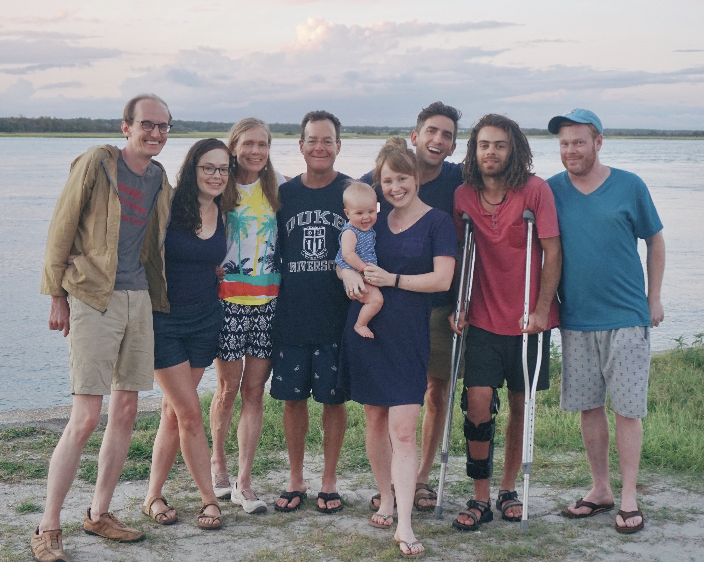

Heidi Carter is a North Carolina native and has lived in Durham with her husband Scott for 40 years. Heidi graduated from Duke University in 1983 with a BS in Biology and went on to receive a Masters of Science in Medicinal Chemistry from UNC in 1984 and a Masters of Public Health from UNC Gillings School of Global Public Health in 2010. She has four grown children, Jamie (partner Nick Doty), Dusty, Haley (husband Eric Francisco), and Dylan. They are all proud graduates of Durham Public Schools and are now working as a doctor, lawyer, physical therapist, and automotive technician. Haley and Eric are parents to one adorable baby boy named Lou. Heidi is an avid runner and loves to cook, read, bike and play the ukulele.
For the past fifteen years, twelve on the Board of Education and three as a County Commissioner, it has been one of Heidi's highest honors to serve all of Durham County, and she remains committed to this diverse, complex and dynamic community we love so much. She strives to give back by helping everyone enjoy the wonderful quality of life Durham has to offer, especially those who are most vulnerable and have been by-passed by Durham’s prosperity. During her first term as Commissioner, Heidi and colleagues made numerous accomplishments and began many promising new initiatives. She would cherish the chance to serve again to steer them through to completion.